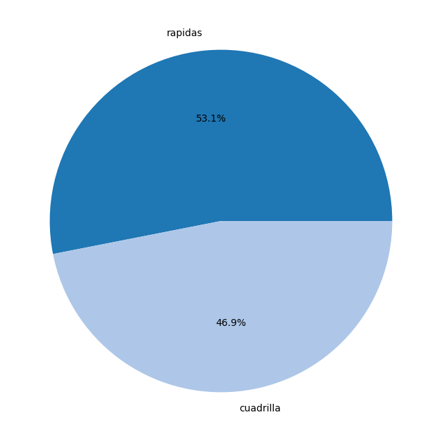
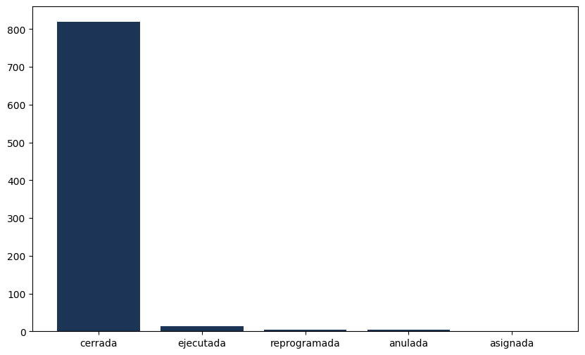
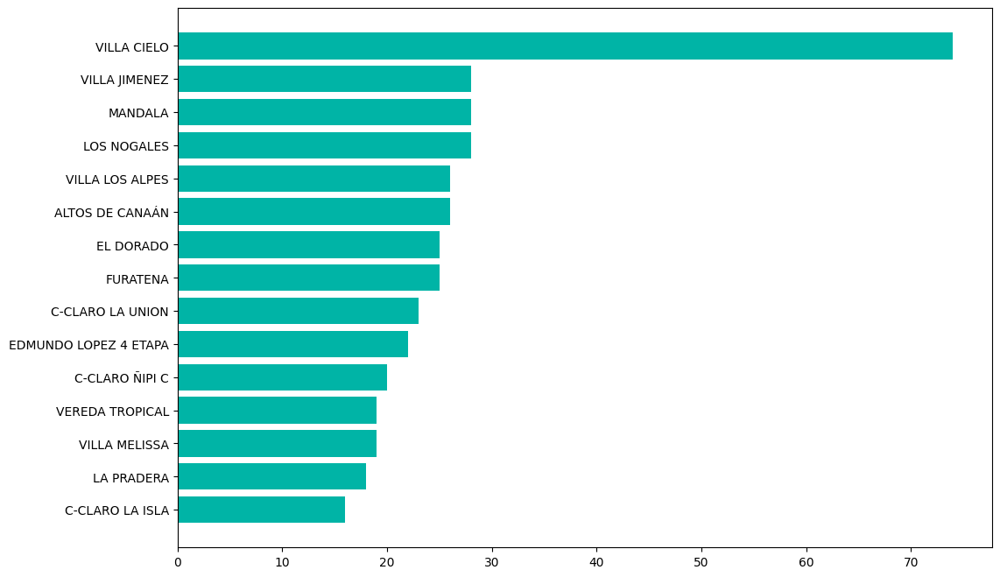
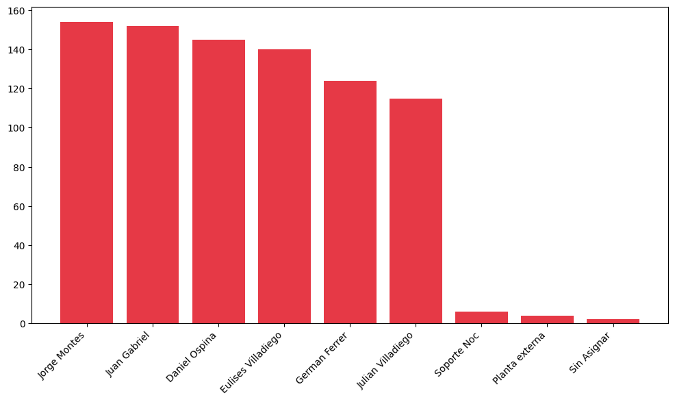
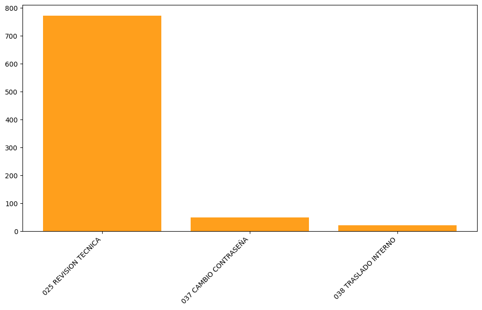
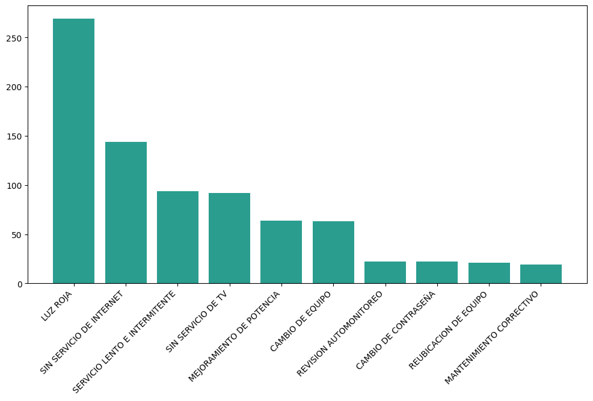
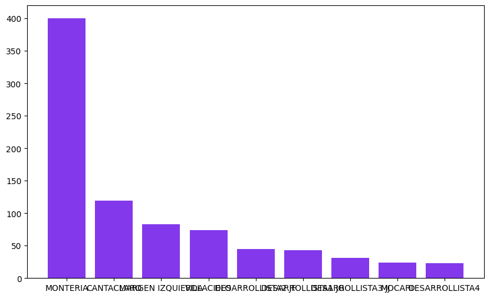

Este reporte presenta un análisis completo y detallado de las 842 órdenes de servicio atendidas durante el período del 1 al 30 de abril de 2026 por la Corporación Regional de Telecomunicaciones.

Figura 1: Distribución por Clasificación

Figura 2: Estado de las Órdenes
| Indicador | Valor | Observación |
|---|---|---|
| Tasa de Cierre | 97.27% | 819 de 842 órdenes cerradas exitosamente |
| Tasa de Resolución | 99.17% | 835 de 842 órdenes con solución aplicada |
| Órdenes sin Solución | 7 | 0.83% del total (requiere seguimiento) |
| Barrios Atendidos | 118 | Cobertura geográfica completa |
| Tiempo Promedio | 32.52 hrs | Mediana: 22.58 horas |
| Órdenes con Tiempo Válido | 829 | 98.46% del total |
Distribución geográfica de las 842 órdenes de servicio atendidas en el período. Los barrios con mayor concentración de solicitudes se presentan en orden descendente.

Figura 3: Top 15 Barrios con Mayor Volumen de Órdenes
| # | Barrio | Cantidad | Porcentaje |
|---|---|---|---|
| 1 | VILLA CIELO | 74 | 8.79% |
| 2 | VILLA JIMENEZ | 28 | 3.33% |
| 3 | MANDALA | 28 | 3.33% |
| 4 | LOS NOGALES | 28 | 3.33% |
| 5 | VILLA LOS ALPES | 26 | 3.09% |
| 6 | ALTOS DE CANAÁN | 26 | 3.09% |
| 7 | EL DORADO | 25 | 2.97% |
| 8 | FURATENA | 25 | 2.97% |
| 9 | C-CLARO LA UNION | 23 | 2.73% |
| 10 | EDMUNDO LOPEZ 4 ETAPA | 22 | 2.61% |
| 11 | C-CLARO ÑIPI C | 20 | 2.38% |
| 12 | VEREDA TROPICAL | 19 | 2.26% |
| 13 | VILLA MELISSA | 19 | 2.26% |
| 14 | LA PRADERA | 18 | 2.14% |
| 15 | C-CLARO LA ISLA | 16 | 1.90% |
| 16 | SIERRA CHIQUITA | 15 | 1.78% |
| 17 | LOS ARAUJOS | 15 | 1.78% |
| 18 | NUEVA ESPERANZA | 14 | 1.66% |
| 19 | C-CLARO LA REPRESA | 14 | 1.66% |
| 20 | POLICARPA | 13 | 1.54% |
| TOTAL GENERAL (Top 20) | 502 | 59.62% | |
Tabla 1: Top 20 Barrios por Volumen de Órdenes
Desempeño individual de cada técnico mostrando el total de órdenes atendidas, tiempo promedio de atención y participación porcentual en el período.

Figura 4: Ranking de Técnicos por Volumen de Órdenes
| Técnico | Órdenes | % Particip. | Tiempo Prom. (hrs) | Ranking |
|---|---|---|---|---|
| Jorge Montes | 154 | 18.29% | 23.93 | 1° |
| Juan Gabriel | 152 | 18.05% | 35.78 | 2° |
| Daniel Ospina | 145 | 17.22% | 27.14 | 3° |
| Eulises Villadiego | 140 | 16.63% | 31.84 | 4° |
| German Ferrer | 124 | 14.73% | 38.98 | 5° |
| Julian Villadiego | 115 | 13.66% | 33.43 | 6° |
| Soporte NOC | 6 | 0.71% | 195.67 | — |
| Planta Externa | 4 | 0.48% | 2.70 | — |
| Sin Asignar | 2 | 0.24% | 0.00 | — |
| TOTAL GENERAL | 842 | 100.00% | 32.52 | — |
Tabla 2: Desempeño por Técnico
Clasificación detallada de las soluciones técnicas aplicadas por los técnicos. El total de soluciones coincide con el total de órdenes: 842.
| # | Tipo de Solución | Cantidad | Porcentaje |
|---|---|---|---|
| 1 | 23 SERVICIO OPERATIVO | 143 | 16.98% |
| 2 | 7 CAMBIO - EQUIPO DEFECTUOSO | 91 | 10.81% |
| 3 | 4 CONFIGURACIÓN DE EQUIPO | 75 | 8.91% |
| 4 | 6 FIBRA PARTIDA - CAMBIO FIBRA | 70 | 8.31% |
| 5 | 19 MEJORA DE POTENCIA | 47 | 5.58% |
| 6 | 24 CAMBIO DE BRIDGE | 42 | 4.99% |
| 7 | 50 CAMBIO DE CONTRASEÑA | 36 | 4.28% |
| 8 | 4 CONFIGURACIÓN + 7 CAMBIO EQUIPO | 29 | 3.44% |
| 9 | 1 CAMBIO - CONECTOR MECÁNICO PARTIDO | 24 | 2.85% |
| 10 | 51 CAJA SIN POTENCIA | 18 | 2.14% |
| 11 | 5 FIBRA PARTIDA - SE INSTALA ROSETA | 17 | 2.02% |
| 12 | 17 ESCANEO DE CANALES | 15 | 1.78% |
| 13 | 7 CAMBIO EQUIPO + 24 CAMBIO BRIDGE | 14 | 1.66% |
| 14 | 6 FIBRA + 11 CAMBIO CONECTOR CAJA | 13 | 1.54% |
| 15 | 49 TRASLADO INTERNO | 9 | 1.07% |
| 16 | 8 CAMBIO - EQUIPO QUEMADO | 9 | 1.07% |
| 17 | 7 CAMBIO EQUIPO + 4 CONFIGURACIÓN | 8 | 0.95% |
| 18 | SIN SOLUCIÓN | 7 | 0.83% |
| 19 | 26 REUBICACION DE FIBRA | 6 | 0.71% |
| 20 | 4 CONFIGURACIÓN + 17 ESCANEO CANALES | 6 | 0.71% |
| TOTAL GENERAL | 842 | 100.00% | |
Tabla 3: Soluciones Técnicas por Frecuencia
Análisis de la distribución de órdenes según su clasificación y tipo de orden de servicio.
Figura 5: Distribución por Clasificación
| Clasificación | Cantidad | Porcentaje |
|---|---|---|
| Órdenes Rápidas | 447 | 53.09% |
| Cuadrilla | 395 | 46.91% |
| TOTAL | 842 | 100% |

Figura 6: Distribución por Tipo de Orden
| Tipo de Orden | Cantidad | Porcentaje |
|---|---|---|
| 025 REVISIÓN TÉCNICA | 772 | 91.69% |
| 037 CAMBIO CONTRASEÑA | 49 | 5.82% |
| 038 TRASLADO INTERNO | 21 | 2.49% |
| TOTAL | 842 | 100% |
Figura 7: Distribución por Estado
| Estado | Cantidad | Porcentaje |
|---|---|---|
| Cerrada | 819 | 97.27% |
| Ejecutada | 14 | 1.66% |
| Reprogramada | 4 | 0.48% |
| Anulada | 4 | 0.48% |
| Asignada | 1 | 0.12% |
| TOTAL GENERAL | 842 | 100.00% |
Tabla 4: Estado de las Órdenes
Los tiempos de atención se calculan desde la Fecha de Creación hasta la Fecha Fin de Atención. Se incluyen TODAS las 842 órdenes.
| Rango de Tiempo | Cantidad | Porcentaje | Acumulado |
|---|---|---|---|
| Sin tiempo válido (Fecha Fin <= Creación) | 13 | 1.54% | 13 (1.54%) |
| 0 - 6 horas (Mismo día) | 161 | 19.12% | 174 (20.67%) |
| 6 - 12 horas (Día siguiente) | 68 | 8.08% | 242 (28.74%) |
| 12 - 24 horas (1-2 días) | 224 | 26.60% | 466 (55.34%) |
| 24 - 48 horas (2-3 días) | 196 | 23.28% | 662 (78.62%) |
| 48 - 72 horas (3-4 días) | 93 | 11.05% | 755 (89.67%) |
| 72 - 120 horas (4-5 días) | 49 | 5.82% | 804 (95.49%) |
| > 120 horas (más de 5 días) | 38 | 4.51% | 842 (100.00%) |
| TOTAL GENERAL | 842 | 100% | — |
Tabla 5: Distribución de Tiempos de Atención (Total: 842 órdenes)
| Métrica | Valor |
|---|---|
| Tiempo Mínimo | 0 horas |
| Tiempo Máximo | 811.48 horas |
| Percentil 25% | 6.85 horas |
| Percentil 75% | 43.74 horas |
| Desviación Estándar | 46.70 horas |

Figura 8: Órdenes por Tipo de Solicitud del Suscriptor
Figura 9: Comparativa de Órdenes Atendidas por Técnico

Figura 10: Distribución por Zona